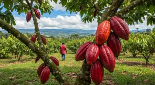
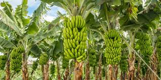
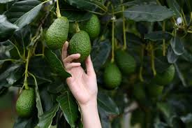
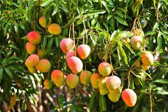

Bienvenido a la Feria Digital Agropecuaria
Explora los cultivos, mira la galería, conoce historias de productores y regístrate en nuestra feria digital.
Tipos de cultivo
Galería de fotos
Imágenes de algunos cultivos de la región.






Historias de productores
Experiencias rurales
La historia de Don José
Don José lleva más de 20 años cultivando café en la vereda. Desde muy joven aprendió de su padre las técnicas tradicionales de siembra y cosecha, y con el tiempo fue perfeccionando sus métodos. Cada mañana, antes del amanecer, recorre sus parcelas revisando las plantas, asegurándose de que reciban el cuidado adecuado. Lo que más le apasiona a Don José es compartir sus conocimientos con los más jóvenes del pueblo. A menudo organiza pequeñas charlas y demostraciones, mostrando cómo seleccionar los granos más maduros y cómo secarlos al sol para conservar todo su aroma y sabor. Para él, el café no es solo un cultivo: es historia, tradición y orgullo. Cada taza que se sirve en la comunidad lleva consigo el esfuerzo de Don José y la memoria de generaciones que han trabajado la tierra con dedicación y amor.
La huerta comunitaria
En la vereda, un grupo de productores se unió para cultivar verduras y frutas de manera sostenible, enseñando a los más jóvenes.
Formulario de inscripción
Contacto
Nombre: Everaldy Ayala Usuga
Correo: everaldya@gmail.com
Celular: +57 3112361741
Ubicación: Santa Barbara, Antioquia